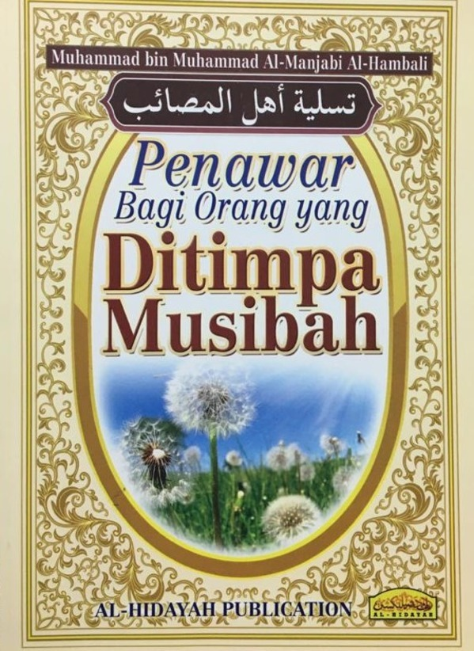

PRELOVED BOOKSTORE | 

Penawar Bagi Orang yang Ditimpa Musibah
Preloved Price: RM 15.00
Category: Islamic Book
Summary:Summary: Musibah adalah sesuatu yang menimpa manusia, ada kalanya ia datang sebagai hukuman Allah atas kesalahan dan kelalaian manusia dan ada kalanya ia datang sebagai ujian atas keimanan hambanya. Perkara ini amat penting sekali, kerana dengan cara itu dia tidak akan kehilangan punca atau dapat mengawal dirinya dan mencari jalan yang hendak dilaluinya seterusnya. Pengarang buku ini berusaha membantu pembaca budiman, terutama pembaca yang ditimpa musibah, untuk mencari jalan keluar atau penawar agar seseorang itu boleh menentukan arah tuju yang akan dilaluinya selepas itu, benarkah musibah itu didatangkan sebagai sarana penghapus dosa bagi manusia atau sejauh mana hubungan musibah itu dengan qadak dan qadar yang sudah ditentukan oleh Allah untuk hambanya. Huraian yang dibentangkan di dalam buku kecil ini amat sesuai dibaca dan difahami oleh kaum Muslimin dan Muslimat agar jiwa selalu tenang dan hati tidak gelisah ketika ditimpa musibah. Jelasnya agar musibah yang menimpa itu tidak merosakkan keimanan dan membahayakan keyakinan serta tetap tabah dan tenang dalam menghadapi liku-liku kehidupan selanjutnya.
| Title | Penawar Bagi Orang yang Ditimpa Musibah |
|---|---|
| ISBN | 9789830996868 |
| Format: | Paperback |
| Author: | : Muhammad bin Muhammad Al-Manjabi Al-Hambali |
| Category: | Islamic Book |
| Publisher: | Al-Hidayah Publication |
*Reminder: Please copy&paste the title of the book to put into the order list and also please calculate the price of the book your own to pay it on checkout form.